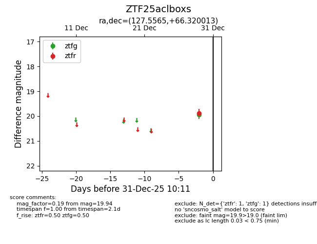
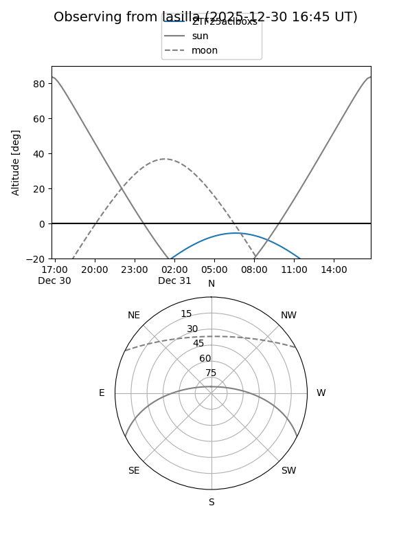
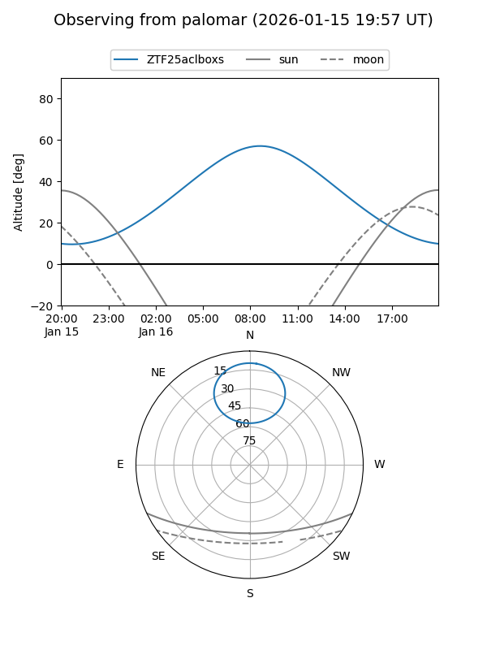
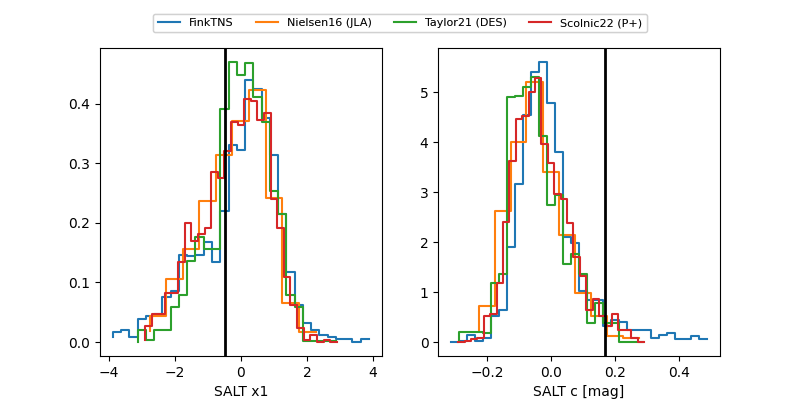

ZTF25aclboxs
Target ZTF25aclboxs at 2026-01-14 10:41
Aliases and brokers:
FINK: link
Lasair: link
ALeRCE: link
alt names
ZTF25aclboxs (ztf,fink_ztf)
Coordinates:
equatorial (ra, dec) = 127.5565,+66.32001
equatorial (HMS+DMS) = 08:30:13.56,+66:19:12.05
galactic (l, b) = (149.2247,+34.53701)
Flags:
Photometry:
last ztfg=19.94, ztfr=19.92
1 ztfg, 2 ztfr detections
Lightcurve

Visibility


Additional plots
